2022 Higher Computing Science questions
Source: Scottish Qualifications Authority (SQA) / Qualifications Scotland. This is a StemInteract HTML companion, not an official HTML edition. Selectable text is supplied alongside original page images. Use the images or original PDF for equations, powers, fractions, vector notation, tables and diagrams; text extraction cannot fully preserve mathematical layout.
Jump to a question
PDF page 1
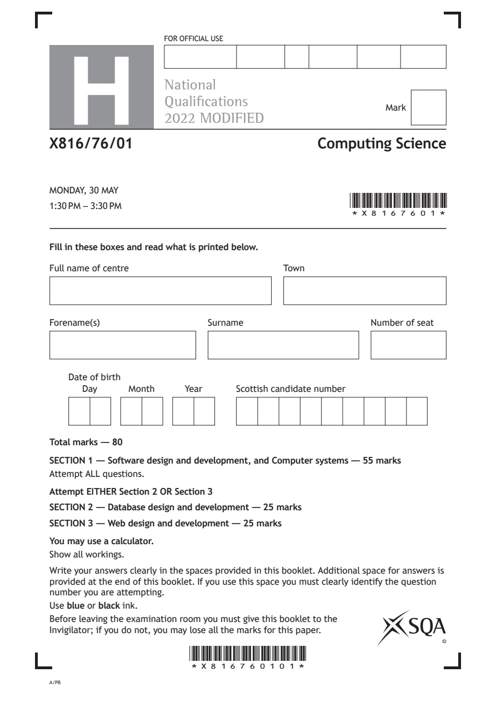
Selectable page text
FOR OFFICIAL USE
H
National
Qualications
Mark
2022 MODIFIED
X816/76/01 Computing Science
MONDAY, 30 MAY
1:30 PM – 3:30 PM
*X8167601*
Fill in these boxes and read what is printed below.
Full name of centre Town
Forename(s) Surname Number of seat
Date of birth
Day Month Year Scottish candidate number
Total marks — 80
SECTION 1 — Software design and development, and Computer systems — 55 marks
Attempt ALL questions.
Attempt EITHER Section 2 OR Section 3
SECTION 2 — Database design and development — 25 marks
SECTION 3 — Web design and development — 25 marks
You may use a calculator.
Show all workings.
Write your answers clearly in the spaces provided in this booklet. Additional space for answers is
provided at the end of this booklet. If you use this space you must clearly identify the question
number you are attempting.
Use blue or black ink.
Before leaving the examination room you must give this booklet to the
Invigilator; if you do not, you may lose all the marks for this paper.
©
*X816760101*
A/PBPDF page 2
Question 1Question 2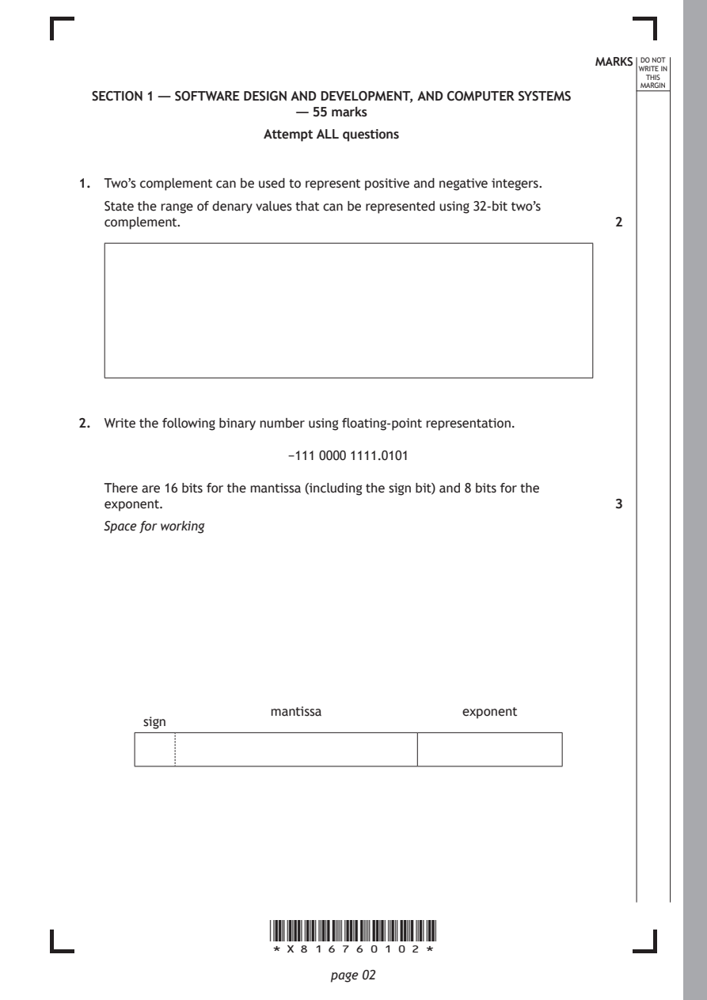
Selectable page text
MARKS DO NOT
WRITE IN
THIS
MARGIN
SECTION 1 — SOFTWARE DESIGN AND DEVELOPMENT, AND COMPUTER SYSTEMS
— 55 marks
Attempt ALL questions
1. Two’s complement can be used to represent positive and negative integers.
State the range of denary values that can be represented using 32‑bit two’s
complement. 2
2. Write the following binary number using floating‑point representation.
−111 0000 1111.0101
There are 16 bits for the mantissa (including the sign bit) and 8 bits for the
exponent. 3
Space for working
mantissa exponent
sign
*X816760102*
page 02PDF page 3
Question 3Question 4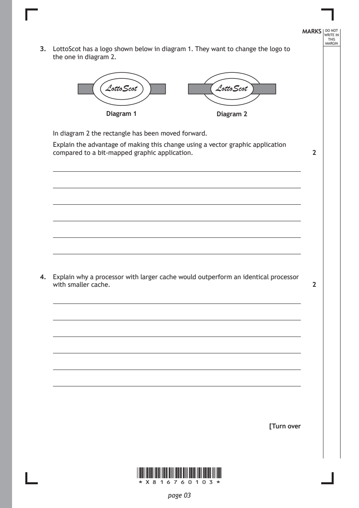
Selectable page text
MARKS DO NOT
WRITE IN
THIS
MARGIN
3. LottoScot has a logo shown below in diagram 1. They want to change the logo to
the one in diagram 2.
LottoScot LottoScot
Diagram 1 Diagram 2
In diagram 2 the rectangle has been moved forward.
Explain the advantage of making this change using a vector graphic application
compared to a bit‑mapped graphic application. 2
4. Explain why a processor with larger cache would outperform an identical processor
with smaller cache. 2
[Turn over
*X816760103*
page 03PDF page 4
Question 5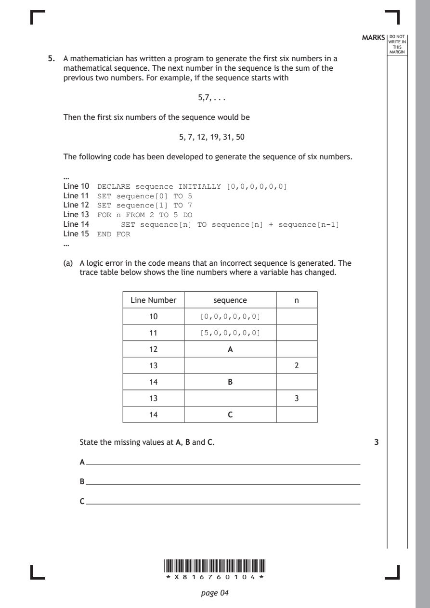
Selectable page text
MARKS DO NOT
WRITE IN
THIS
MARGIN
5. A mathematician has written a program to generate the first six numbers in a
mathematical sequence. The next number in the sequence is the sum of the
previous two numbers. For example, if the sequence starts with
5,7, . . .
Then the first six numbers of the sequence would be
5, 7, 12, 19, 31, 50
The following code has been developed to generate the sequence of six numbers.
…
Line 10
DECLARE sequence INITIALLY [0,0,0,0,0,0]
Line 11
SET sequence[0] TO 5
Line 12
SET sequence[1] TO 7
Line 13
FOR n FROM 2 TO 5 DO
Line 14
SET sequence[n] TO sequence[n] + sequence[n-1]
Line 15
END FOR
…
(a) A logic error in the code means that an incorrect sequence is generated. The
trace table below shows the line numbers where a variable has changed.
Line Number sequence n
10
[0,0,0,0,0,0]
11
[5,0,0,0,0,0]
12 A
13 2
14 B
13 3
14 C
State the missing values at A, B and C. 3
A
B
C
*X816760104*
page 04PDF page 5
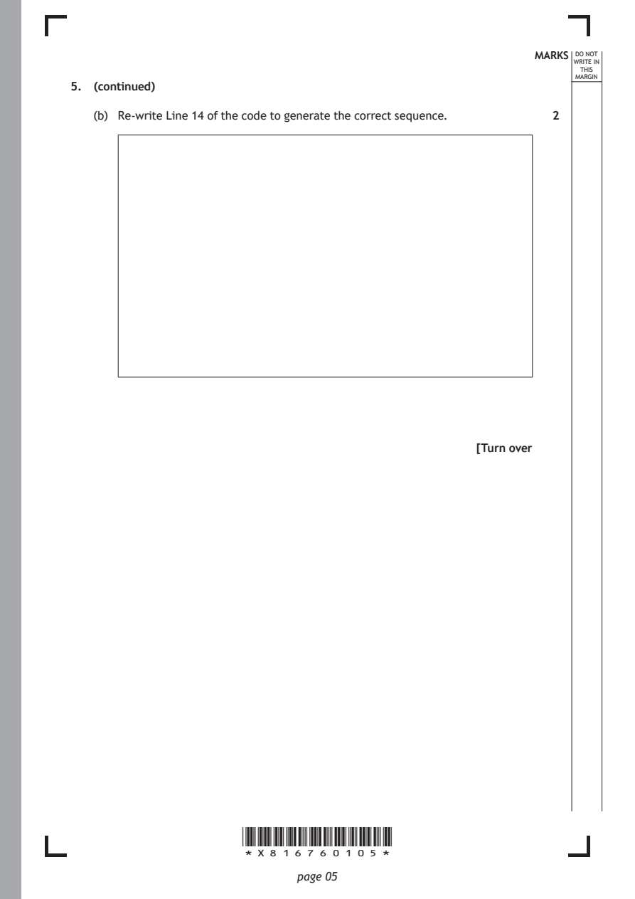
Selectable page text
MARKS DO NOT
WRITE IN
THIS
MARGIN
5. (continued)
(b) Re‑write Line 14 of the code to generate the correct sequence. 2
[Turn over
*X816760105*
page 05PDF page 6
Question 6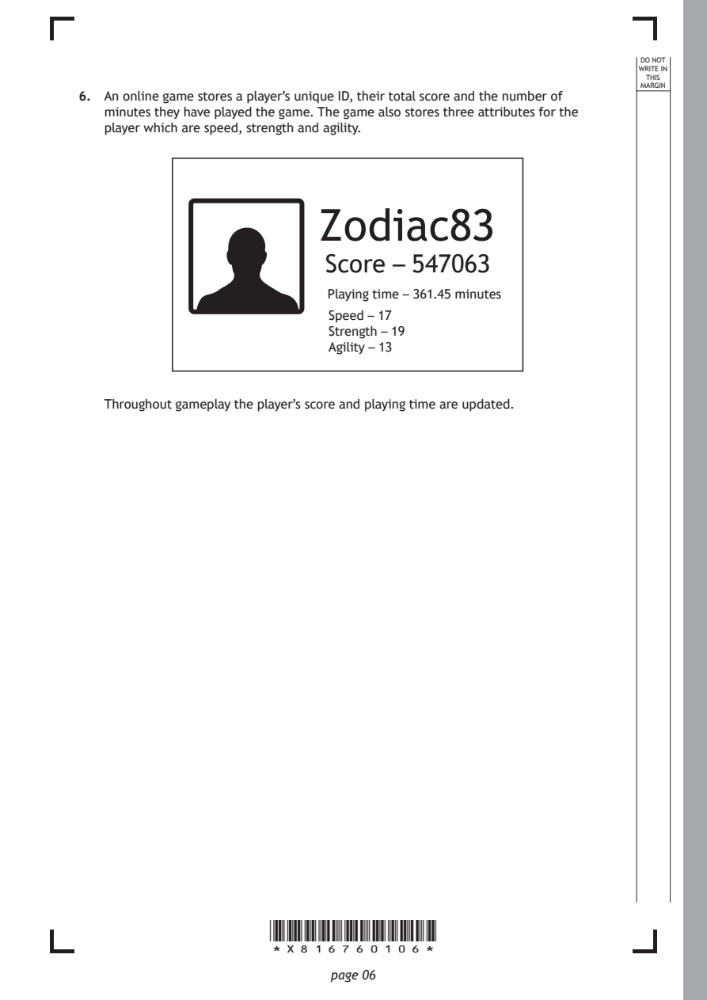
Selectable page text
DO NOT
WRITE IN
THIS
MARGIN
6. An online game stores a player’s unique ID, their total score and the number of
minutes they have played the game. The game also stores three attributes for the
player which are speed, strength and agility.
Zodiac83
Score – 547063
Playing time – 361.45 minutes
Speed – 17
Strength – 19
Agility – 13
Throughout gameplay the player’s score and playing time are updated.
*X816760106*
page 06PDF page 7
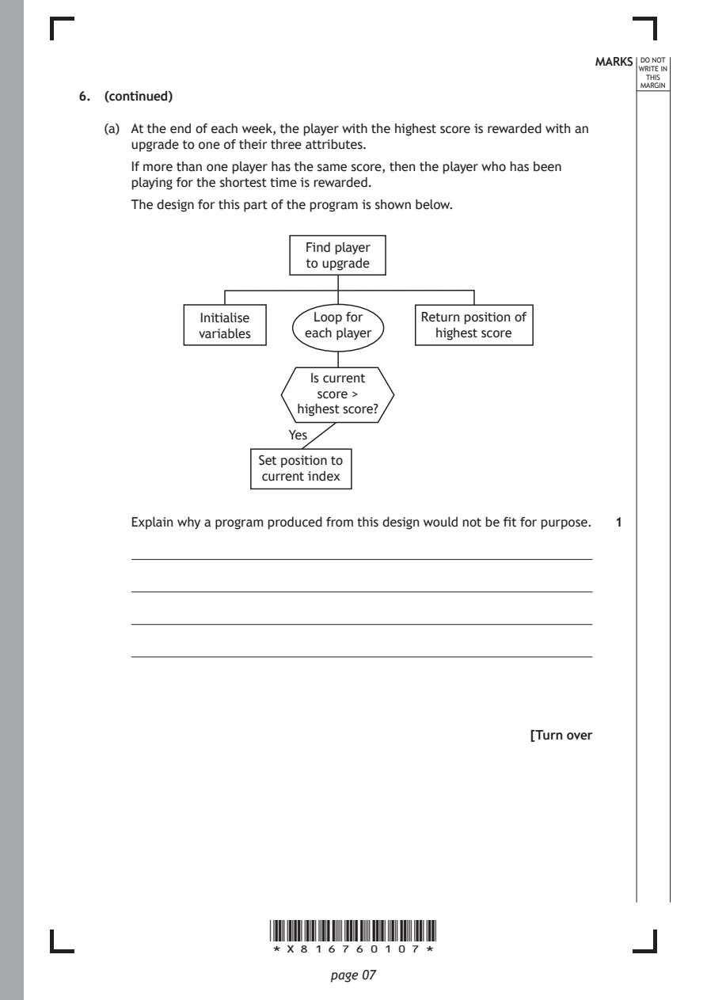
Selectable page text
MARKS DO NOT
WRITE IN
THIS
MARGIN
6. (continued)
(a) At the end of each week, the player with the highest score is rewarded with an
upgrade to one of their three attributes.
If more than one player has the same score, then the player who has been
playing for the shortest time is rewarded.
The design for this part of the program is shown below.
Find player
to upgrade
Initialise Loop for Return position of
variables each player highest score
Is current
score >
highest score?
Yes
Set position to
current index
Explain why a program produced from this design would not be fit for purpose. 1
[Turn over
*X816760107*
page 07PDF page 8
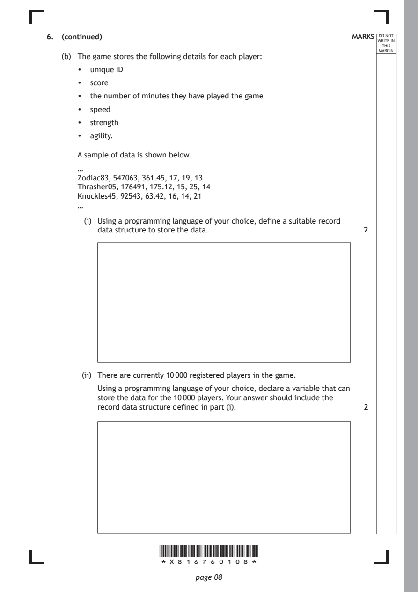
Selectable page text
6. (continued) MARKS DO NOT
WRITE IN
THIS
MARGIN
(b) The game stores the following details for each player:
• unique ID
• score
• the number of minutes they have played the game
• speed
• strength
• agility.
A sample of data is shown below.
…
Zodiac83, 547063, 361.45, 17, 19, 13
Thrasher05, 176491, 175.12, 15, 25, 14
Knuckles45, 92543, 63.42, 16, 14, 21
…
(i) Using a programming language of your choice, define a suitable record
data structure to store the data. 2
(ii) There are currently 10 000 registered players in the game.
Using a programming language of your choice, declare a variable that can
store the data for the 10 000 players. Your answer should include the
record data structure defined in part (i). 2
*X816760108*
page 08PDF page 9
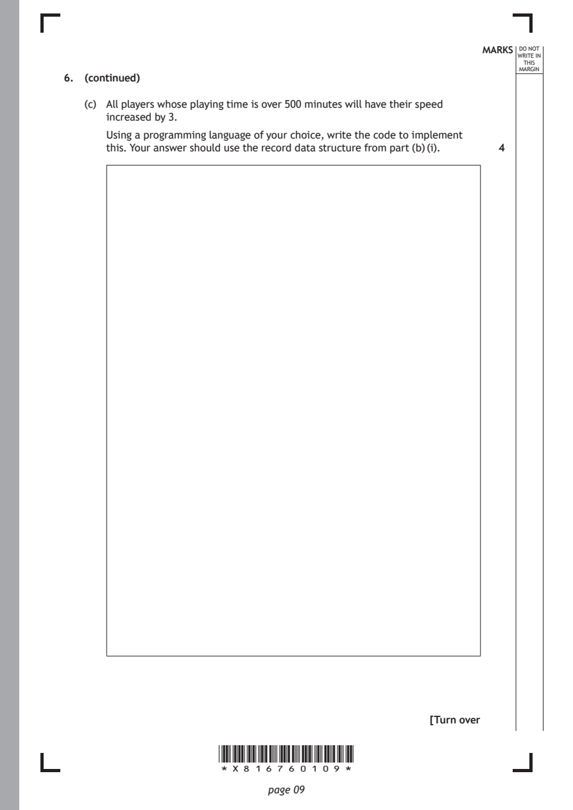
Selectable page text
MARKS DO NOT
WRITE IN
THIS
MARGIN
6. (continued)
(c) All players whose playing time is over 500 minutes will have their speed
increased by 3.
Using a programming language of your choice, write the code to implement
this. Your answer should use the record data structure from part (b) (i). 4
[Turn over
*X816760109*
page 09PDF page 10
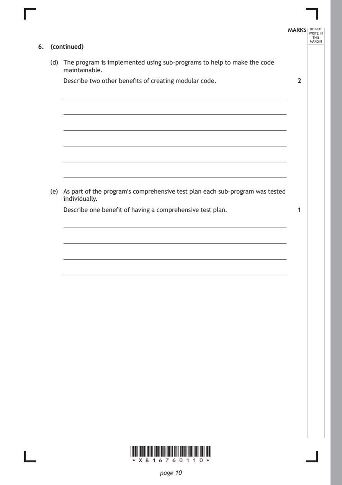
Selectable page text
MARKS DO NOT
WRITE IN
THIS
MARGIN
6. (continued)
(d) The program is implemented using sub‑programs to help to make the code
maintainable.
Describe two other benefits of creating modular code. 2
(e) As part of the program’s comprehensive test plan each sub‑program was tested
individually.
Describe one benefit of having a comprehensive test plan. 1
*X816760110*
page 10PDF page 11
Question 7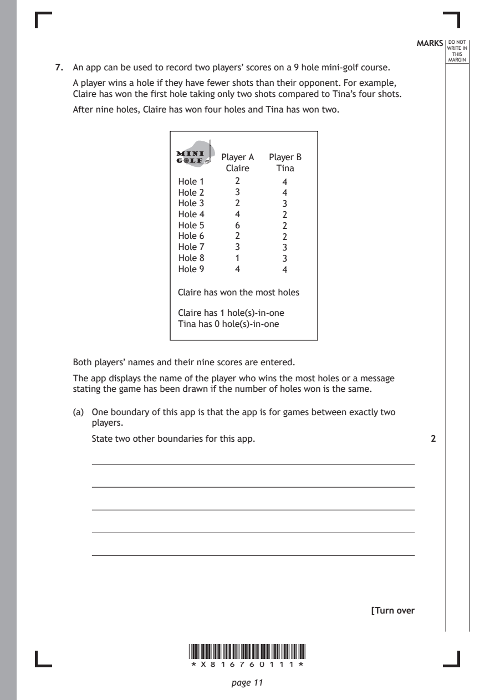
Selectable page text
MARKS DO NOT
WRITE IN
THIS
MARGIN
7. An app can be used to record two players’ scores on a 9 hole mini‑golf course.
A player wins a hole if they have fewer shots than their opponent. For example,
Claire has won the first hole taking only two shots compared to Tina’s four shots.
After nine holes, Claire has won four holes and Tina has won two.
Player A Player B
Claire Tina
Hole 1 2 4
Hole 2 3 4
Hole 3 2 3
Hole 4 4 2
Hole 5 6 2
Hole 6 2 2
Hole 7 3 3
Hole 8 1 3
Hole 9 4 4
Claire has won the most holes
Claire has 1 hole(s)‑in‑one
Tina has 0 hole(s)‑in‑one
Both players’ names and their nine scores are entered.
The app displays the name of the player who wins the most holes or a message
stating the game has been drawn if the number of holes won is the same.
(a) One boundary of this app is that the app is for games between exactly two
players.
State two other boundaries for this app. 2
[Turn over
*X816760111*
page 11PDF page 12
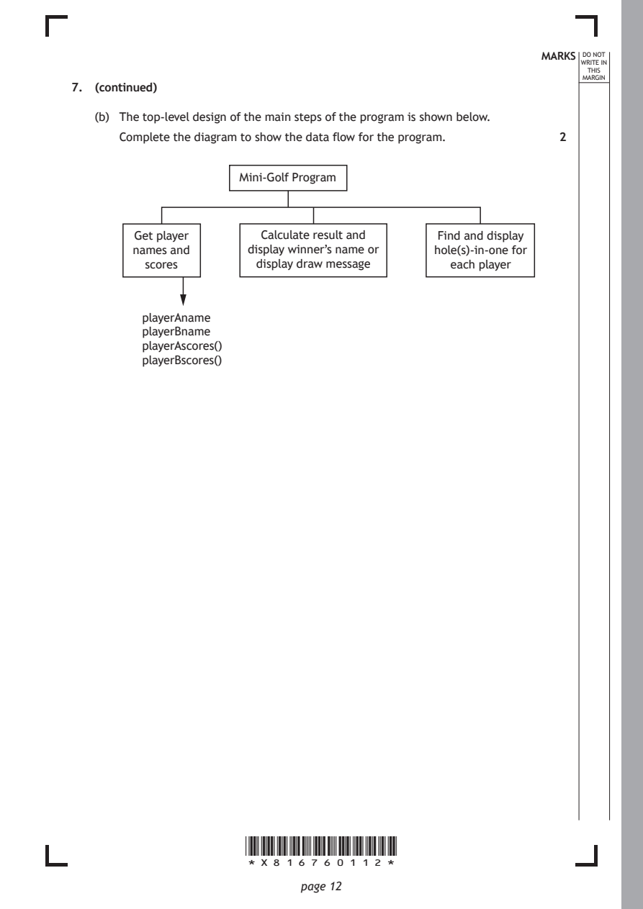
Selectable page text
MARKS DO NOT
WRITE IN
THIS
MARGIN
7. (continued)
(b) The top‑level design of the main steps of the program is shown below.
Complete the diagram to show the data flow for the program. 2
Mini‑Golf Program
Get player Calculate result and Find and display
names and display winner’s name or hole(s)‑in‑one for
scores display draw message each player
playerAname
playerBname
playerAscores()
playerBscores()
*X816760112*
page 12PDF page 13
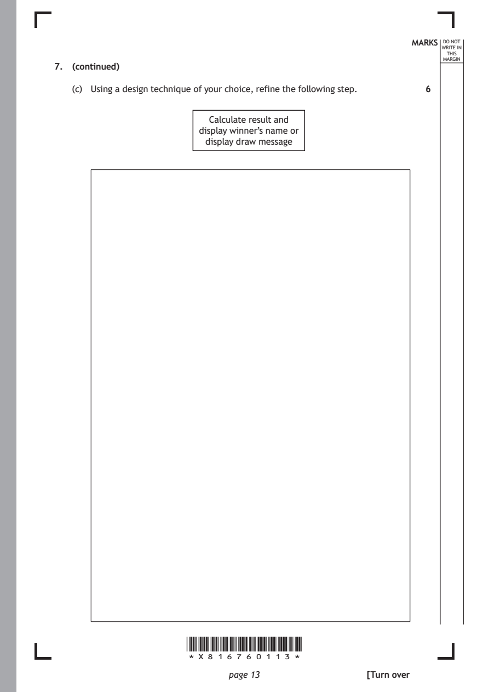
Selectable page text
MARKS DO NOT
WRITE IN
THIS
MARGIN
7. (continued)
(c) Using a design technique of your choice, refine the following step. 6
Calculate result and
display winner’s name or
display draw message
*X816760113*
page 13 [Turn overPDF page 14
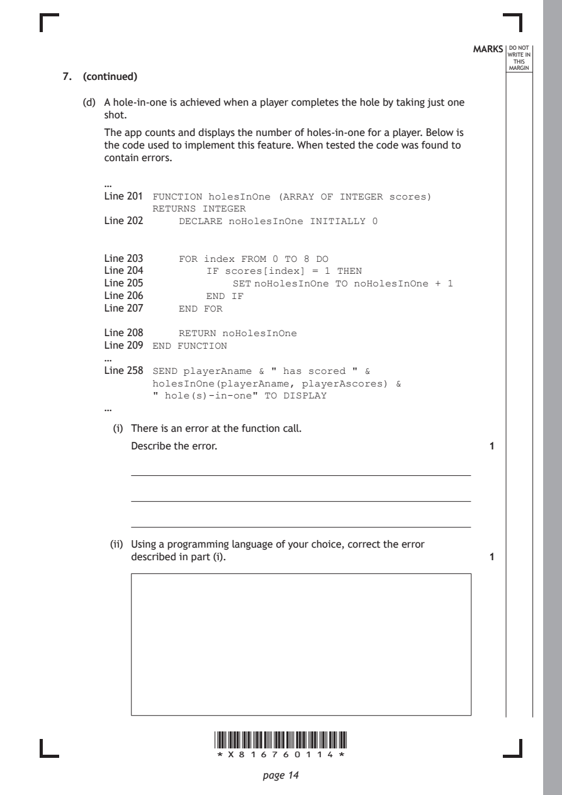
Selectable page text
MARKS DO NOT
WRITE IN
THIS
MARGIN
7. (continued)
(d) A hole‑in‑one is achieved when a player completes the hole by taking just one
shot.
The app counts and displays the number of holes‑in‑one for a player. Below is
the code used to implement this feature. When tested the code was found to
contain errors.
…
Line 201
FUNCTION holesInOne (ARRAY OF INTEGER scores)
RETURNS INTEGER
Line 202
DECLARE noHolesInOne INITIALLY 0
Line 203
FOR index FROM 0 TO 8 DO
Line 204
IF scores[index] = 1 THEN
Line 205
SET noHolesInOne TO noHolesInOne + 1
Line 206
END IF
Line 207
END FOR
Line 208
RETURN noHolesInOne
Line 209
END FUNCTION
…
Line 258
SEND playerAname & " has scored " &
holesInOne(playerAname, playerAscores) &
" hole(s)-in-one" TO DISPLAY
…
(i) There is an error at the function call.
Describe the error. 1
(ii) Using a programming language of your choice, correct the error
described in part (i). 1
*X816760114*
page 14PDF page 15
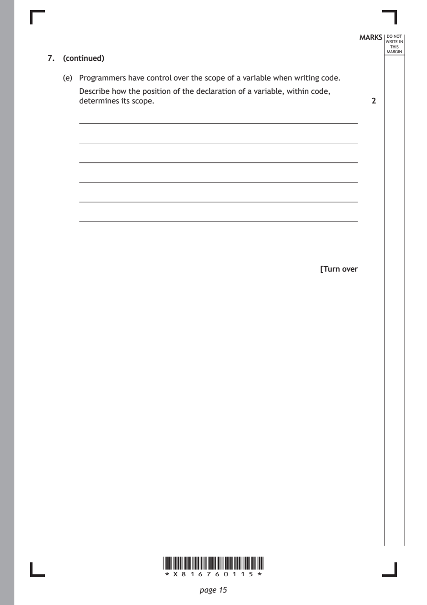
Selectable page text
MARKS DO NOT
WRITE IN
THIS
MARGIN
7. (continued)
(e) Programmers have control over the scope of a variable when writing code.
Describe how the position of the declaration of a variable, within code,
determines its scope. 2
[Turn over
*X816760115*
page 15PDF page 16
Question 8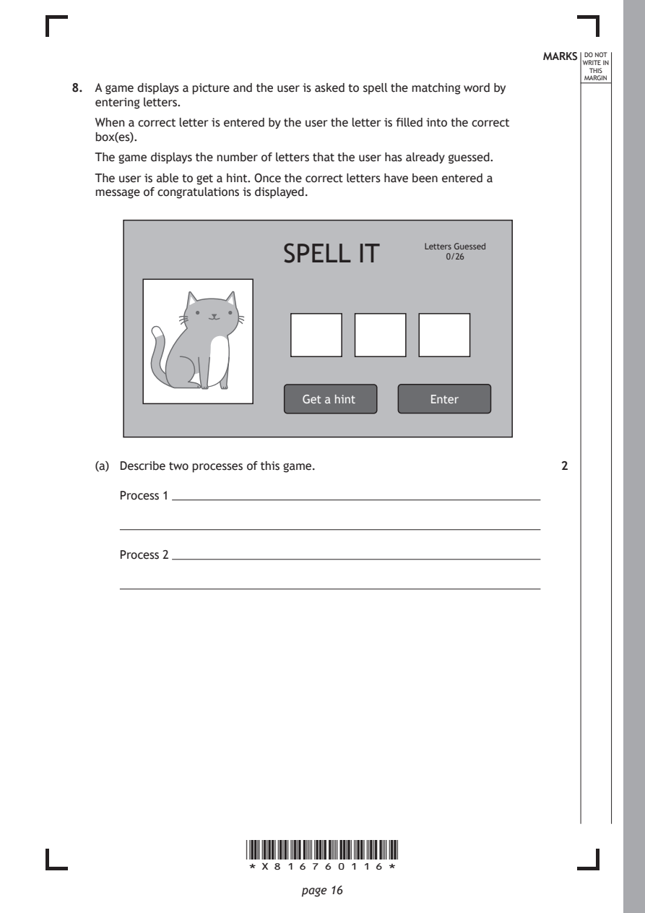
Selectable page text
MARKS DO NOT
WRITE IN
THIS
MARGIN
8. A game displays a picture and the user is asked to spell the matching word by
entering letters.
When a correct letter is entered by the user the letter is filled into the correct
box(es).
The game displays the number of letters that the user has already guessed.
The user is able to get a hint. Once the correct letters have been entered a
message of congratulations is displayed.
SPELL IT Letters Guessed
0/26
Get a hint Enter
(a) Describe two processes of this game. 2
Process 1
Process 2
*X816760116*
page 16PDF page 17
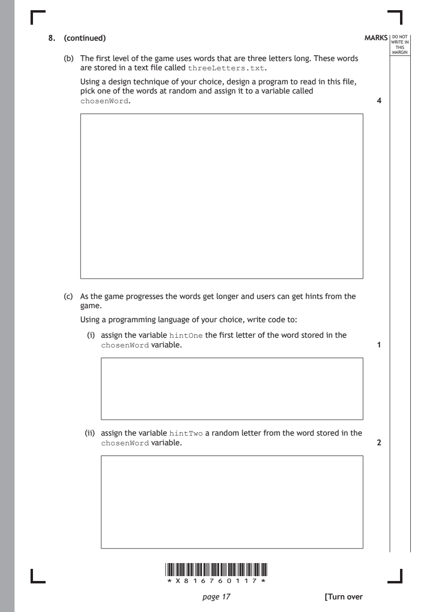
Selectable page text
8. (continued) MARKS DO NOT
WRITE IN
THIS
MARGIN
(b) The first level of the game uses words that are three letters long. These words
are stored in a text file called .
threeLetters.txt
Using a design technique of your choice, design a program to read in this file,
pick one of the words at random and assign it to a variable called
. 4
chosenWord
(c) As the game progresses the words get longer and users can get hints from the
game.
Using a programming language of your choice, write code to:
(i) assign the variable the first letter of the word stored in the
hintOne
variable. 1
chosenWord
(ii) assign the variable a random letter from the word stored in the
hintTwo
variable. 2
chosenWord
*X816760117*
page 17 [Turn overPDF page 18
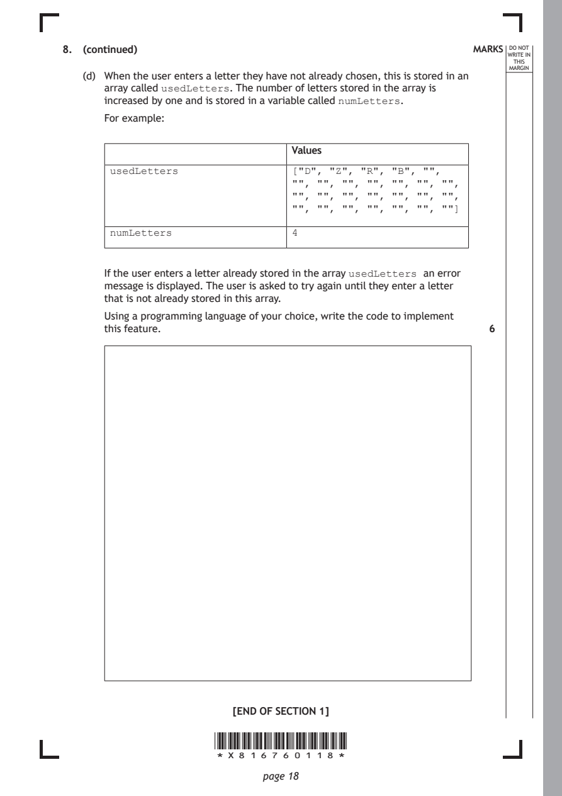
Selectable page text
8. (continued) MARKS DO NOT
WRITE IN
THIS
MARGIN
(d) When the user enters a letter they have not already chosen, this is stored in an
array called . The number of letters stored in the array is
usedLetters
increased by one and is stored in a variable called .
numLetters
For example:
Values
usedLetters ["D", "Z", "R", "B", "",
"", "", "", "", "", "", "",
"", "", "", "", "", "", "",
"", "", "", "", "", "", ""]
numLetters 4
If the user enters a letter already stored in the array an error
usedLetters
message is displayed. The user is asked to try again until they enter a letter
that is not already stored in this array.
Using a programming language of your choice, write the code to implement
this feature. 6
[END OF SECTION 1]
*X816760118*
page 18PDF page 19
Question 9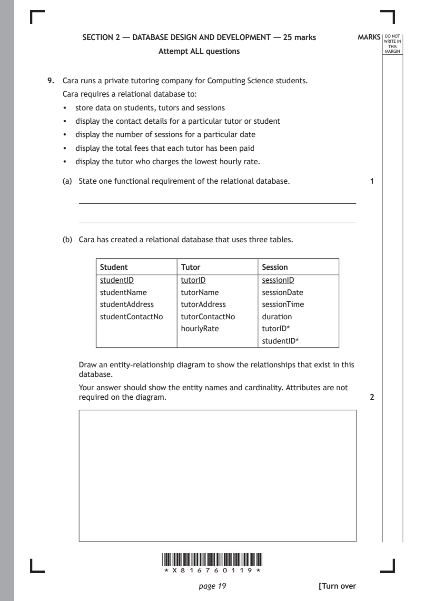
Selectable page text
SECTION 2 — DATABASE DESIGN AND DEVELOPMENT — 25 marks MARKS DO NOT
WRITE IN
THIS
Attempt ALL questions MARGIN
9. Cara runs a private tutoring company for Computing Science students.
Cara requires a relational database to:
• store data on students, tutors and sessions
• display the contact details for a particular tutor or student
• display the number of sessions for a particular date
• display the total fees that each tutor has been paid
• display the tutor who charges the lowest hourly rate.
(a) State one functional requirement of the relational database. 1
(b) Cara has created a relational database that uses three tables.
Student Tutor Session
studentID tutorID sessionID
studentName tutorName sessionDate
studentAddress tutorAddress sessionTime
studentContactNo tutorContactNo duration
hourlyRate tutorID*
studentID*
Draw an entity‑relationship diagram to show the relationships that exist in this
database.
Your answer should show the entity names and cardinality. Attributes are not
required on the diagram. 2
*X816760119*
page 19 [Turn overPDF page 20
Question 10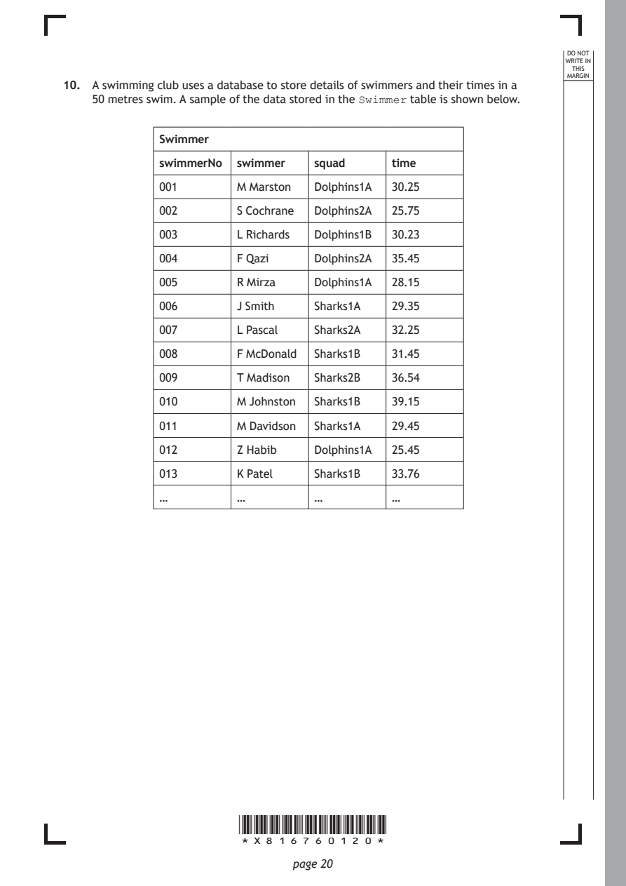
Selectable page text
DO NOT
WRITE IN
THIS
MARGIN
10. A swimming club uses a database to store details of swimmers and their times in a
50 metres swim. A sample of the data stored in the table is shown below.
Swimmer
Swimmer
swimmerNo swimmer squad time
001 M Marston Dolphins1A 30.25
002 S Cochrane Dolphins2A 25.75
003 L Richards Dolphins1B 30.23
004 F Qazi Dolphins2A 35.45
005 R Mirza Dolphins1A 28.15
006 J Smith Sharks1A 29.35
007 L Pascal Sharks2A 32.25
008 F McDonald Sharks1B 31.45
009 T Madison Sharks2B 36.54
010 M Johnston Sharks1B 39.15
011 M Davidson Sharks1A 29.45
012 Z Habib Dolphins1A 25.45
013 K Patel Sharks1B 33.76
… … … …
*X816760120*
page 20PDF page 21
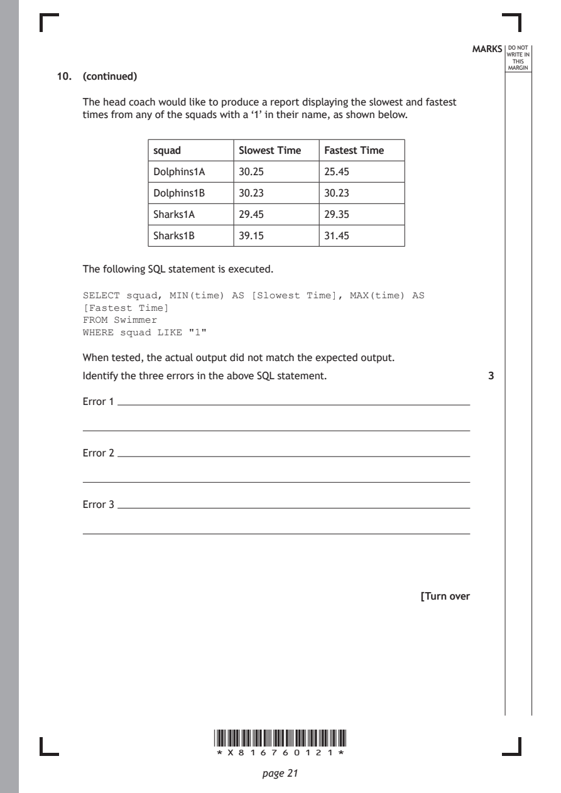
Selectable page text
MARKS DO NOT
WRITE IN
THIS
MARGIN
10. (continued)
The head coach would like to produce a report displaying the slowest and fastest
times from any of the squads with a ‘1’ in their name, as shown below.
squad Slowest Time Fastest Time
Dolphins1A 30.25 25.45
Dolphins1B 30.23 30.23
Sharks1A 29.45 29.35
Sharks1B 39.15 31.45
The following SQL statement is executed.
SELECT squad, MIN(time) AS [Slowest Time], MAX(time) AS
[Fastest Time]
FROM Swimmer
WHERE squad LIKE "1"
When tested, the actual output did not match the expected output.
Identify the three errors in the above SQL statement. 3
Error 1
Error 2
Error 3
[Turn over
*X816760121*
page 21PDF page 22
Question 11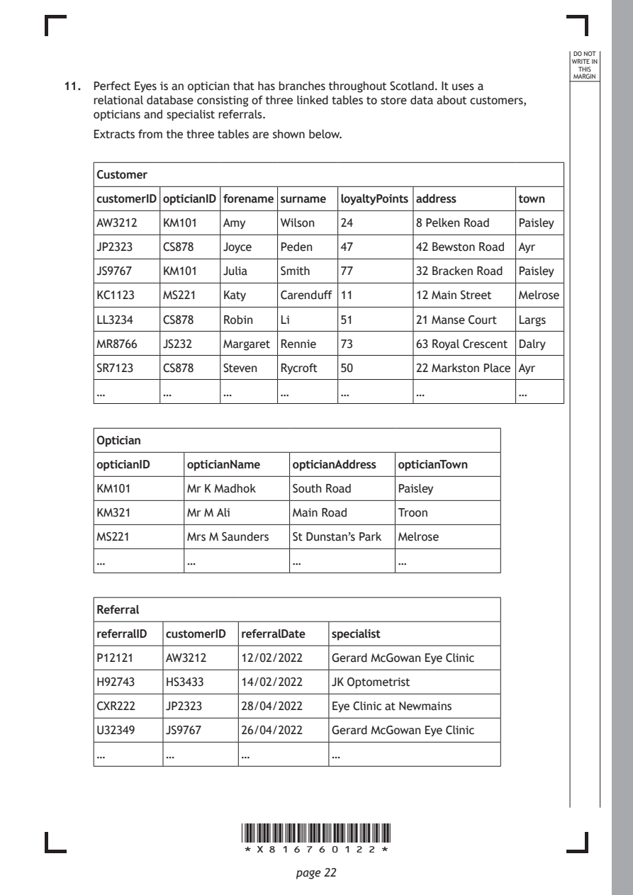
Selectable page text
DO NOT
WRITE IN
THIS
MARGIN
11. Perfect Eyes is an optician that has branches throughout Scotland. It uses a
relational database consisting of three linked tables to store data about customers,
opticians and specialist referrals.
Extracts from the three tables are shown below.
Customer
customerID opticianID forename surname loyaltyPoints address town
AW3212 KM101 Amy Wilson 24 8 Pelken Road Paisley
JP2323 CS878 Joyce Peden 47 42 Bewston Road Ayr
JS9767 KM101 Julia Smith 77 32 Bracken Road Paisley
KC1123 MS221 Katy Carenduff 11 12 Main Street Melrose
LL3234 CS878 Robin Li 51 21 Manse Court Largs
MR8766 JS232 Margaret Rennie 73 63 Royal Crescent Dalry
SR7123 CS878 Steven Rycroft 50 22 Markston Place Ayr
… … … … … … …
Optician
opticianID opticianName opticianAddress opticianTown
KM101 Mr K Madhok South Road Paisley
KM321 Mr M Ali Main Road Troon
MS221 Mrs M Saunders St Dunstan’s Park Melrose
… … … …
Referral
referralID customerID referralDate specialist
P12121 AW3212 12/02/2022 Gerard McGowan Eye Clinic
H92743 HS3433 14/02/2022 JK Optometrist
CXR222 JP2323 28/04/2022 Eye Clinic at Newmains
U32349 JS9767 26/04/2022 Gerard McGowan Eye Clinic
… … … …
*X816760122*
page 22PDF page 23
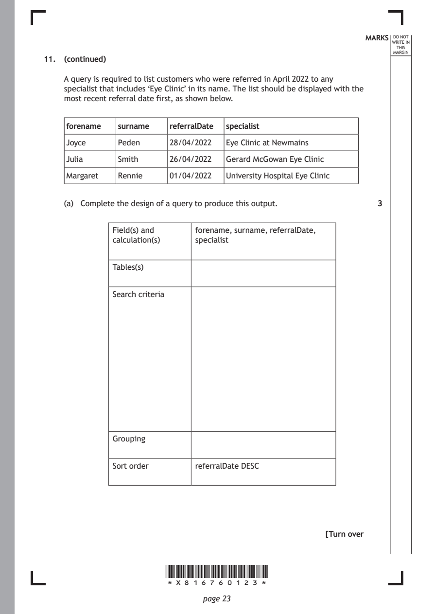
Selectable page text
MARKS DO NOT
WRITE IN
THIS
MARGIN
11. (continued)
A query is required to list customers who were referred in April 2022 to any
specialist that includes ‘Eye Clinic’ in its name. The list should be displayed with the
most recent referral date first, as shown below.
forename surname referralDate specialist
Joyce Peden 28/04/2022 Eye Clinic at Newmains
Julia Smith 26/04/2022 Gerard McGowan Eye Clinic
Margaret Rennie 01/04/2022 University Hospital Eye Clinic
(a) Complete the design of a query to produce this output. 3
Field(s) and forename, surname, referralDate,
calculation(s) specialist
Tables(s)
Search criteria
Grouping
Sort order referralDate DESC
[Turn over
*X816760123*
page 23PDF page 24
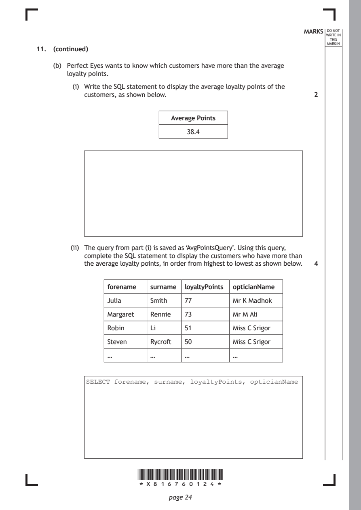
Selectable page text
MARKS DO NOT
WRITE IN
THIS
MARGIN
11. (continued)
(b) Perfect Eyes wants to know which customers have more than the average
loyalty points.
(i) Write the SQL statement to display the average loyalty points of the
customers, as shown below. 2
Average Points
38.4
(ii) The query from part (i) is saved as ‘AvgPointsQuery’. Using this query,
complete the SQL statement to display the customers who have more than
the average loyalty points, in order from highest to lowest as shown below. 4
forename surname loyaltyPoints opticianName
Julia Smith 77 Mr K Madhok
Margaret Rennie 73 Mr M Ali
Robin Li 51 Miss C Srigor
Steven Rycroft 50 Miss C Srigor
… … … …
SELECT forename, surname, loyaltyPoints, opticianName
*X816760124*
page 24PDF page 25
Question 12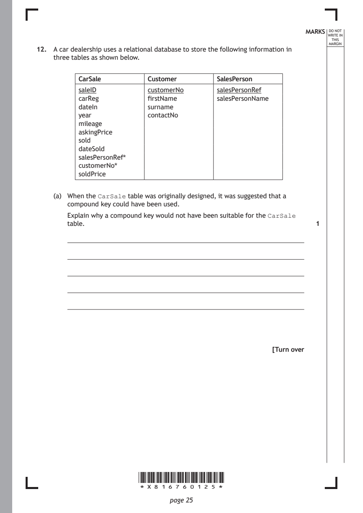
Selectable page text
MARKS DO NOT
WRITE IN
THIS
MARGIN
12. A car dealership uses a relational database to store the following information in
three tables as shown below.
CarSale Customer SalesPerson
saleID customerNo salesPersonRef
carReg firstName salesPersonName
dateIn surname
year contactNo
mileage
askingPrice
sold
dateSold
salesPersonRef*
customerNo*
soldPrice
(a) When the table was originally designed, it was suggested that a
CarSale
compound key could have been used.
Explain why a compound key would not have been suitable for the
CarSale
table. 1
[Turn over
*X816760125*
page 25PDF page 26
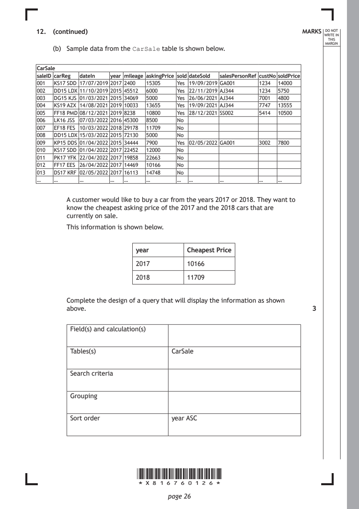
Selectable page text
12. (continued) MARKS DO NOT
WRITE IN
THIS
MARGIN
(b) Sample data from the table is shown below.
CarSale
CarSale
saleID carReg dateIn year mileage askingPrice sold dateSold salesPersonRef custNo soldPrice
001 KS17 SDD 17/07/2019 2017 2400 15305 Yes 19/09/2019 GA001 1234 14000
002 DD15 LDX 11/10/2019 2015 45512 6000 Yes 22/11/2019 AJ344 1234 5750
003 DG15 KJS 01/03/2021 2015 34069 5000 Yes 26/06/2021 AJ344 7001 4800
004 KS19 AZX 14/08/2021 2019 10033 13655 Yes 19/09/2021 AJ344 7747 13555
005 FF18 PMD 08/12/2021 2019 8238 10800 Yes 28/12/2021 SS002 5414 10500
006 LK16 JSS 07/03/2022 2016 45300 8500 No
007 EF18 FES 10/03/2022 2018 29178 11709 No
008 DD15 LDX 15/03/2022 2015 72130 5000 No
009 KP15 DDS 01/04/2022 2015 34444 7900 Yes 02/05/2022 GA001 3002 7800
010 KS17 SDD 01/04/2022 2017 22452 12000 No
011 PK17 YFK 22/04/2022 2017 19858 22663 No
012 FF17 EES 26/04/2022 2017 14469 10166 No
013 DS17 KRF 02/05/2022 2017 16113 14748 No
… … … … … … … … … … …
A customer would like to buy a car from the years 2017 or 2018. They want to
know the cheapest asking price of the 2017 and the 2018 cars that are
currently on sale.
This information is shown below.
year Cheapest Price
2017 10166
2018 11709
Complete the design of a query that will display the information as shown
above. 3
Field(s) and calculation(s)
Tables(s) CarSale
Search criteria
Grouping
Sort order year ASC
*X816760126*
page 26PDF page 27
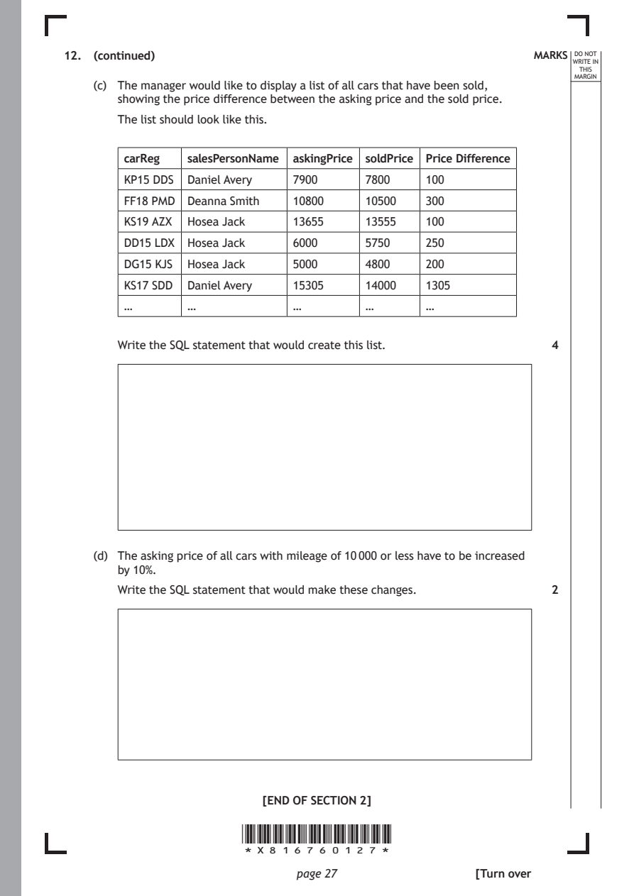
Selectable page text
12. (continued) MARKS DO NOT
WRITE IN
THIS
MARGIN
(c) The manager would like to display a list of all cars that have been sold,
showing the price difference between the asking price and the sold price.
The list should look like this.
carReg salesPersonName askingPrice soldPrice Price Difference
KP15 DDS Daniel Avery 7900 7800 100
FF18 PMD Deanna Smith 10800 10500 300
KS19 AZX Hosea Jack 13655 13555 100
DD15 LDX Hosea Jack 6000 5750 250
DG15 KJS Hosea Jack 5000 4800 200
KS17 SDD Daniel Avery 15305 14000 1305
… … … … …
Write the SQL statement that would create this list. 4
(d) The asking price of all cars with mileage of 10 000 or less have to be increased
by 10%.
Write the SQL statement that would make these changes. 2
[END OF SECTION 2]
*X816760127*
page 27 [Turn overPDF page 28
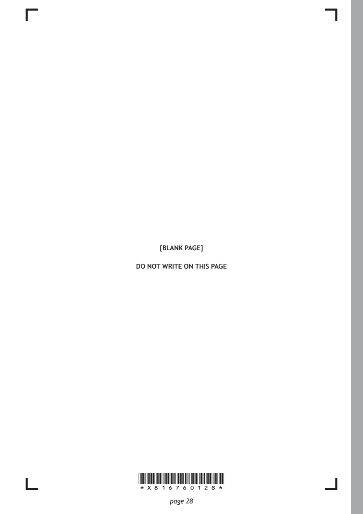
Selectable page text
[BLANK PAGE]
DO NOT WRITE ON THIS PAGE
*X816760128*
page 28PDF page 29
Question 13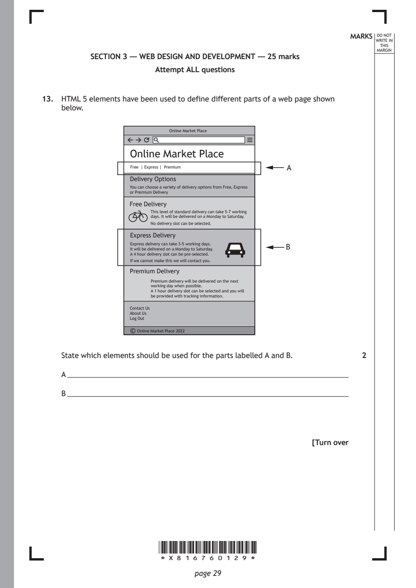
Selectable page text
MARKS DO NOT
WRITE IN
THIS
MARGIN
SECTION 3 — WEB DESIGN AND DEVELOPMENT — 25 marks
Attempt ALL questions
13. HTML 5 elements have been used to define different parts of a web page shown
below.
Online Market Place
Online Market Place
Free | Express | Premium A
Delivery Options
You can choose a variety of delivery options from Free, Express
or Premium Delivery
Free Delivery
This level of standard delivery can take 5-7 working
days. It will be delivered on a Monday to Saturday.
No delivery slot can be selected.
Express Delivery
Express delivery can take 3-5 working days. B
It will be delivered on a Monday to Saturday.
A 4 hour delivery slot can be pre-selected.
If we cannot make this we will contact you.
Premium Delivery
Premium delivery will be delivered on the next
working day when possible.
A 1 hour delivery slot can be selected and you will
be provided with tracking information.
Contact Us
About Us
Log Out
©Online Market Place 2022
State which elements should be used for the parts labelled A and B. 2
A
B
[Turn over
*X816760129*
page 29PDF page 30
Question 14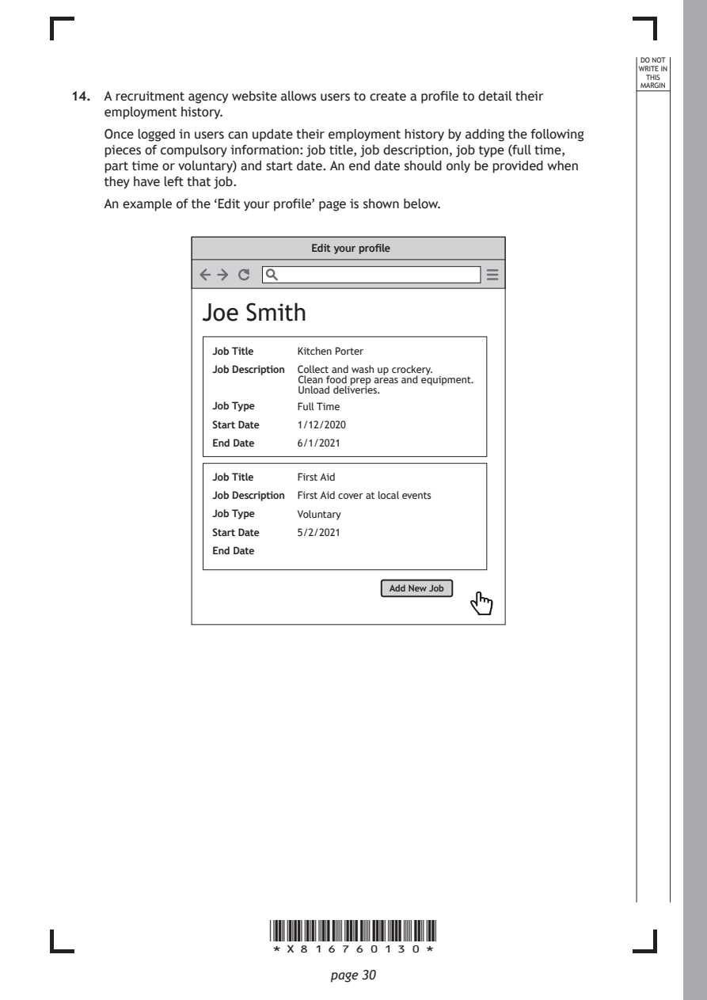
Selectable page text
DO NOT
WRITE IN
THIS
MARGIN
14. A recruitment agency website allows users to create a profile to detail their
employment history.
Once logged in users can update their employment history by adding the following
pieces of compulsory information: job title, job description, job type (full time,
part time or voluntary) and start date. An end date should only be provided when
they have left that job.
An example of the ‘Edit your profile’ page is shown below.
Edit your profile
Joe Smith
Job Title Kitchen Porter
Job Description Collect and wash up crockery.
Clean food prep areas and equipment.
Unload deliveries.
Job Type Full Time
Start Date 1/12/2020
End Date 6/1/2021
Job Title First Aid
Job Description First Aid cover at local events
Job Type Voluntary
Start Date 5/2/2021
End Date
Add New Job
*X816760130*
page 30PDF page 31
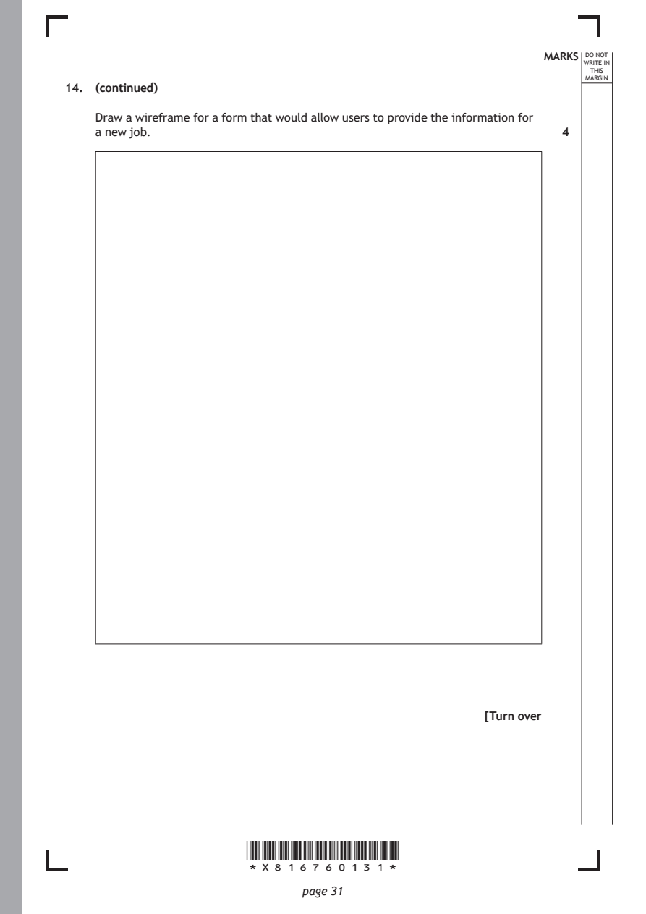
Selectable page text
MARKS DO NOT
WRITE IN
THIS
MARGIN
14. (continued)
Draw a wireframe for a form that would allow users to provide the information for
a new job. 4
[Turn over
*X816760131*
page 31PDF page 32
Question 15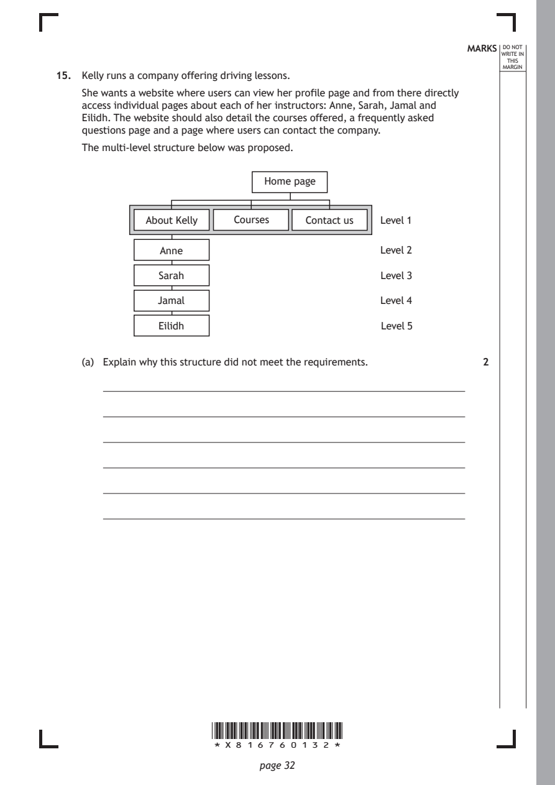
Selectable page text
MARKS DO NOT
WRITE IN
THIS
MARGIN
15. Kelly runs a company offering driving lessons.
She wants a website where users can view her profile page and from there directly
access individual pages about each of her instructors: Anne, Sarah, Jamal and
Eilidh. The website should also detail the courses offered, a frequently asked
questions page and a page where users can contact the company.
The multi‑level structure below was proposed.
Home page
About Kelly Courses Contact us Level 1
Anne Level 2
Sarah Level 3
Jamal Level 4
Eilidh Level 5
(a) Explain why this structure did not meet the requirements. 2
*X816760132*
page 32PDF page 33
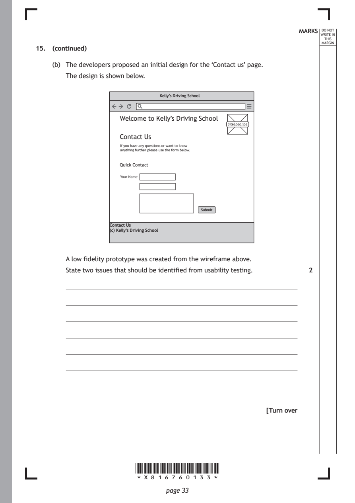
Selectable page text
MARKS DO NOT
WRITE IN
THIS
MARGIN
15. (continued)
(b) The developers proposed an initial design for the ‘Contact us’ page.
The design is shown below.
Kelly’s Driving School
Welcome to Kelly’s Driving School
SiteLogo.jpg
Contact Us
If you have any questions or want to know
anything further please use the form below.
Quick Contact
Your Name
Submit
Contact Us
(c) Kelly’s Driving School
A low fidelity prototype was created from the wireframe above.
State two issues that should be identified from usability testing. 2
[Turn over
*X816760133*
page 33PDF page 34
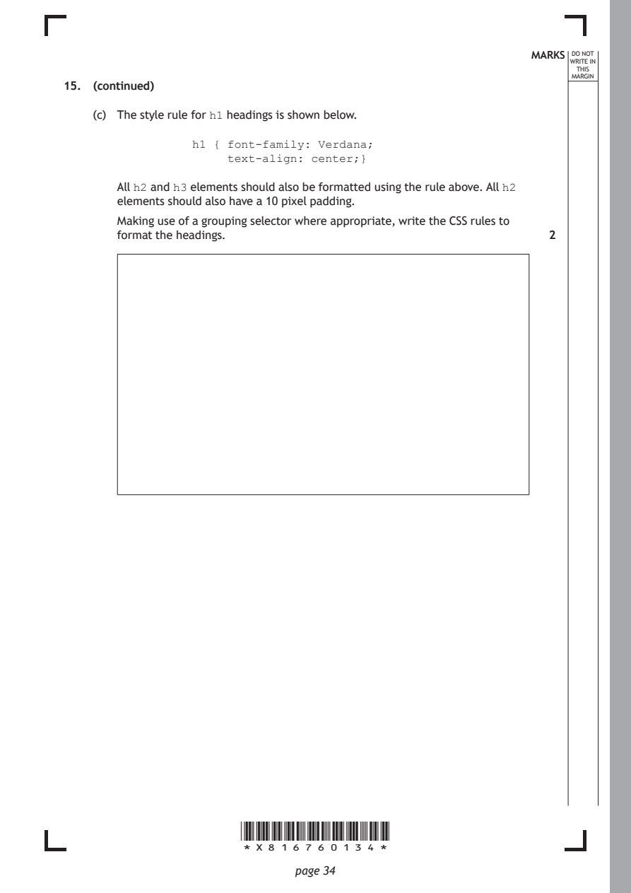
Selectable page text
MARKS DO NOT
WRITE IN
THIS
MARGIN
15. (continued)
(c) The style rule for headings is shown below.
h1
h1 { font-family: Verdana;
text-align: center;}
All and elements should also be formatted using the rule above. All
h2 h3 h2
elements should also have a 10 pixel padding.
Making use of a grouping selector where appropriate, write the CSS rules to
format the headings. 2
*X816760134*
page 34PDF page 35
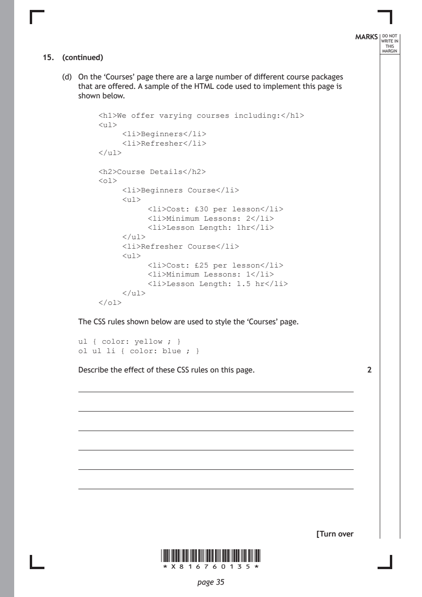
Selectable page text
MARKS DO NOT
WRITE IN
THIS
MARGIN
15. (continued)
(d) On the ‘Courses’ page there are a large number of different course packages
that are offered. A sample of the HTML code used to implement this page is
shown below.
<h1>We offer varying courses including:</h1>
<ul>
<li>Beginners</li>
<li>Refresher</li>
</ul>
<h2>Course Details</h2>
<ol>
<li>Beginners Course</li>
<ul>
<li>Cost: £30 per lesson</li>
<li>Minimum Lessons: 2</li>
<li>Lesson Length: 1hr</li>
</ul>
<li>Refresher Course</li>
<ul>
<li>Cost: £25 per lesson</li>
<li>Minimum Lessons: 1</li>
<li>Lesson Length: 1.5 hr</li>
</ul>
</ol>
The CSS rules shown below are used to style the ‘Courses’ page.
ul { color: yellow ; }
ol ul li { color: blue ; }
Describe the effect of these CSS rules on this page. 2
[Turn over
*X816760135*
page 35PDF page 36
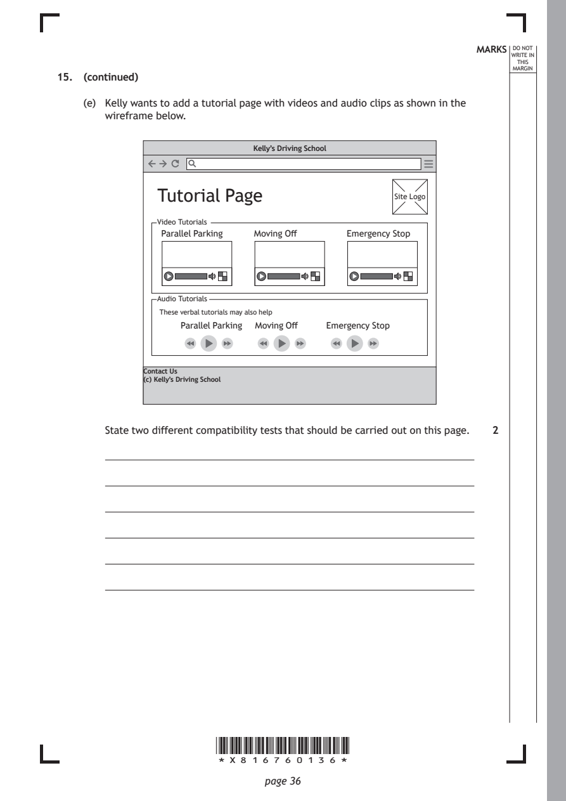
Selectable page text
MARKS DO NOT
WRITE IN
THIS
MARGIN
15. (continued)
(e) Kelly wants to add a tutorial page with videos and audio clips as shown in the
wireframe below.
Kelly’s Driving School
Tutorial Page
Site Logo
Video Tutorials
Parallel Parking Moving Off Emergency Stop
Audio Tutorials
These verbal tutorials may also help
Parallel Parking Moving Off Emergency Stop
Contact Us
(c) Kelly’s Driving School
State two different compatibility tests that should be carried out on this page. 2
*X816760136*
page 36PDF page 37
Question 16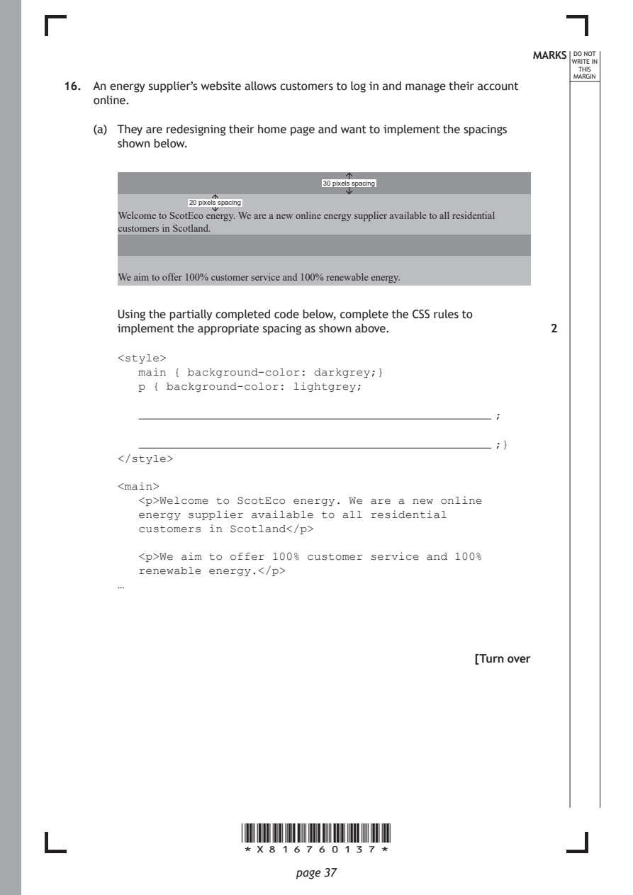
Selectable page text
MARKS DO NOT
WRITE IN
THIS
MARGIN
16. An energy supplier’s website allows customers to log in and manage their account
online.
(a) They are redesigning their home page and want to implement the spacings
shown below.
30 pixels spacing
20 pixels spacing
Welcome to ScotEco energy. We are a new online energy supplier available to all residential
customers in Scotland.
We aim to offer 100% customer service and 100% renewable energy.
Using the partially completed code below, complete the CSS rules to
implement the appropriate spacing as shown above. 2
<style>
main { background-color: darkgrey;}
p { background-color: lightgrey;
;
;}
</style>
<main>
<p>Welcome to ScotEco energy. We are a new online
energy supplier available to all residential
customers in Scotland</p>
<p>We aim to offer 100% customer service and 100%
renewable energy.</p>
…
[Turn over
*X816760137*
page 37PDF page 38
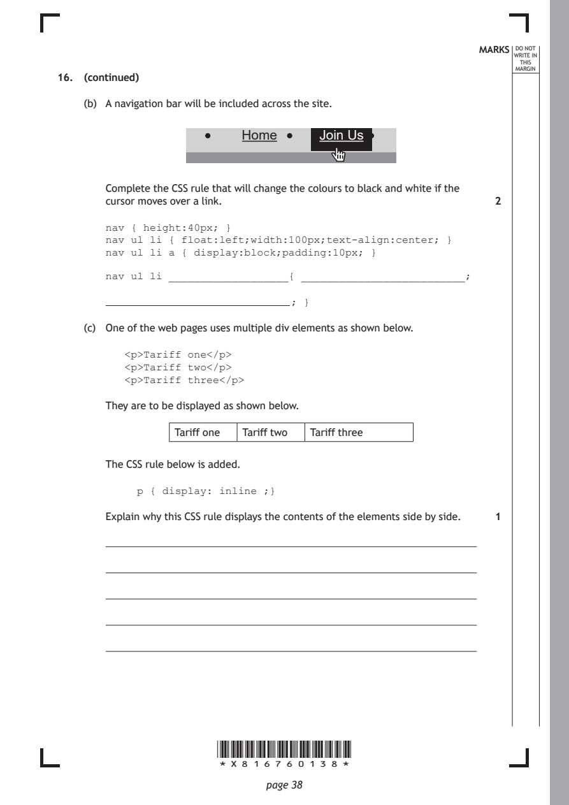
Selectable page text
MARKS DO NOT
WRITE IN
THIS
MARGIN
16. (continued)
(b) A navigation bar will be included across the site.
Home Join Us
Complete the CSS rule that will change the colours to black and white if the
cursor moves over a link. 2
nav { height:40px; }
nav ul li { float:left;width:100px;text-align:center; }
nav ul li a { display:block;padding:10px; }
nav ul li ___________________{ __________________________;
; }
(c) One of the web pages uses multiple div elements as shown below.
<p>Tariff one</p>
<p>Tariff two</p>
<p>Tariff three</p>
They are to be displayed as shown below.
Tariff one Tariff two Tariff three
The CSS rule below is added.
p { display: inline ;}
Explain why this CSS rule displays the contents of the elements side by side. 1
*X816760138*
page 38PDF page 39
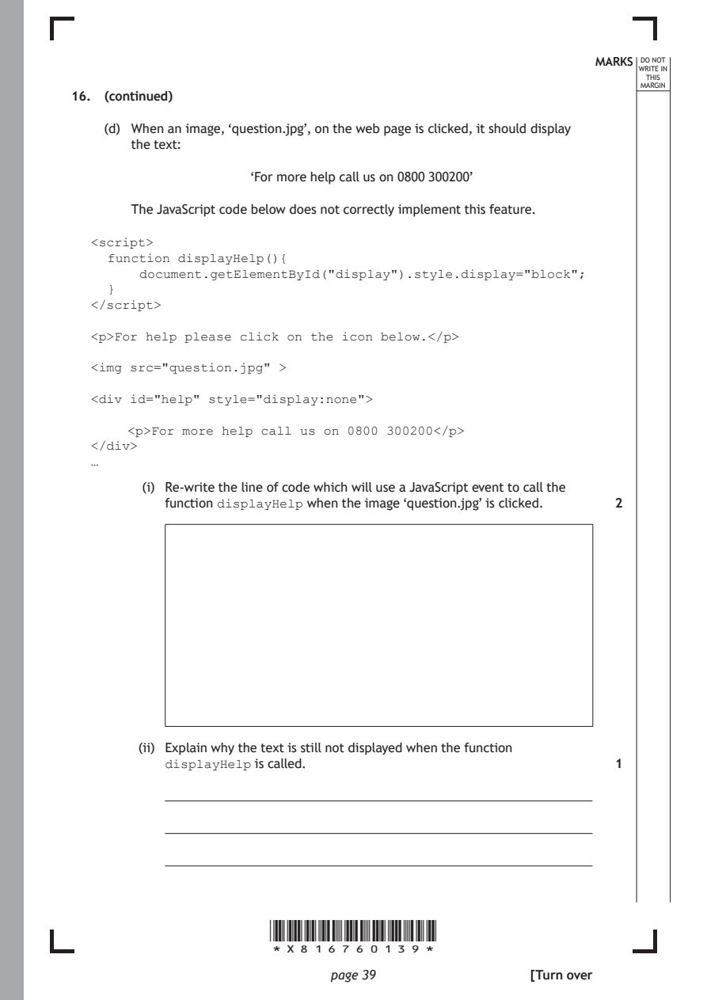
Selectable page text
MARKS DO NOT
WRITE IN
THIS
MARGIN
16. (continued)
(d) When an image, ‘question.jpg’, on the web page is clicked, it should display
the text:
‘For more help call us on 0800 300200’
The JavaScript code below does not correctly implement this feature.
<script>
function displayHelp(){
document.getElementById("display").style.display="block";
}
</script>
<p>For help please click on the icon below.</p>
<img src="question.jpg" >
<div id="help" style="display:none">
<p>For more help call us on 0800 300200</p>
</div>
…
(i) Re‑write the line of code which will use a JavaScript event to call the
function when the image ‘question.jpg’ is clicked. 2
displayHelp
(ii) Explain why the text is still not displayed when the function
is called. 1
displayHelp
*X816760139*
page 39 [Turn overPDF page 40
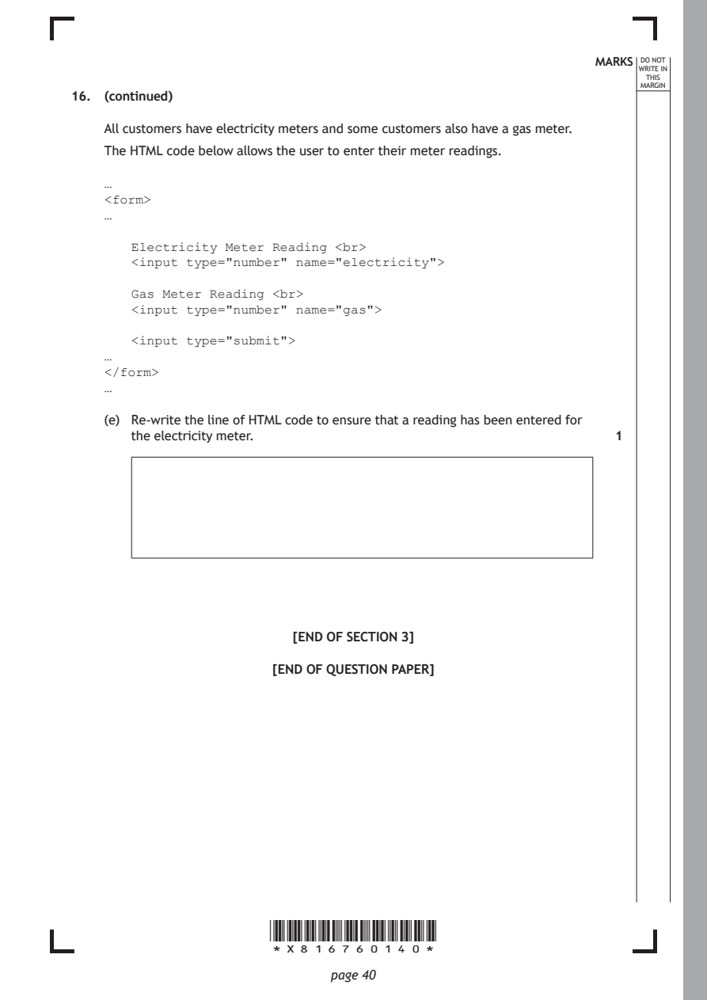
Selectable page text
MARKS DO NOT
WRITE IN
THIS
MARGIN
16. (continued)
All customers have electricity meters and some customers also have a gas meter.
The HTML code below allows the user to enter their meter readings.
…
<form>
…
Electricity Meter Reading <br>
<input type="number" name="electricity">
Gas Meter Reading <br>
<input type="number" name="gas">
<input type="submit">
…
</form>
…
(e) Re‑write the line of HTML code to ensure that a reading has been entered for
the electricity meter. 1
[END OF SECTION 3]
[END OF QUESTION PAPER]
*X816760140*
page 40PDF page 41
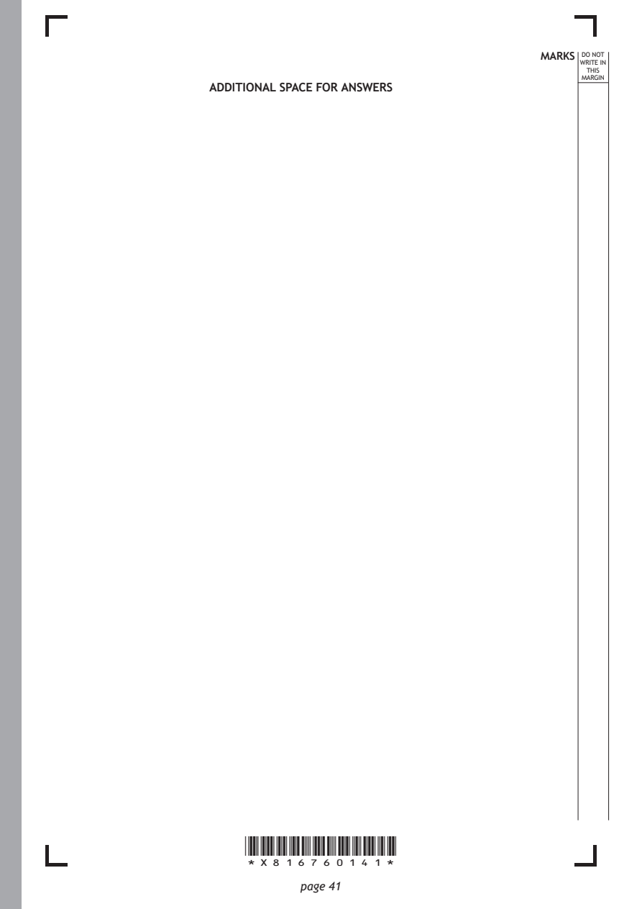
Selectable page text
MARKS DO NOT
WRITE IN
THIS
MARGIN
ADDITIONAL SPACE FOR ANSWERS
*X816760141*
page 41PDF page 42
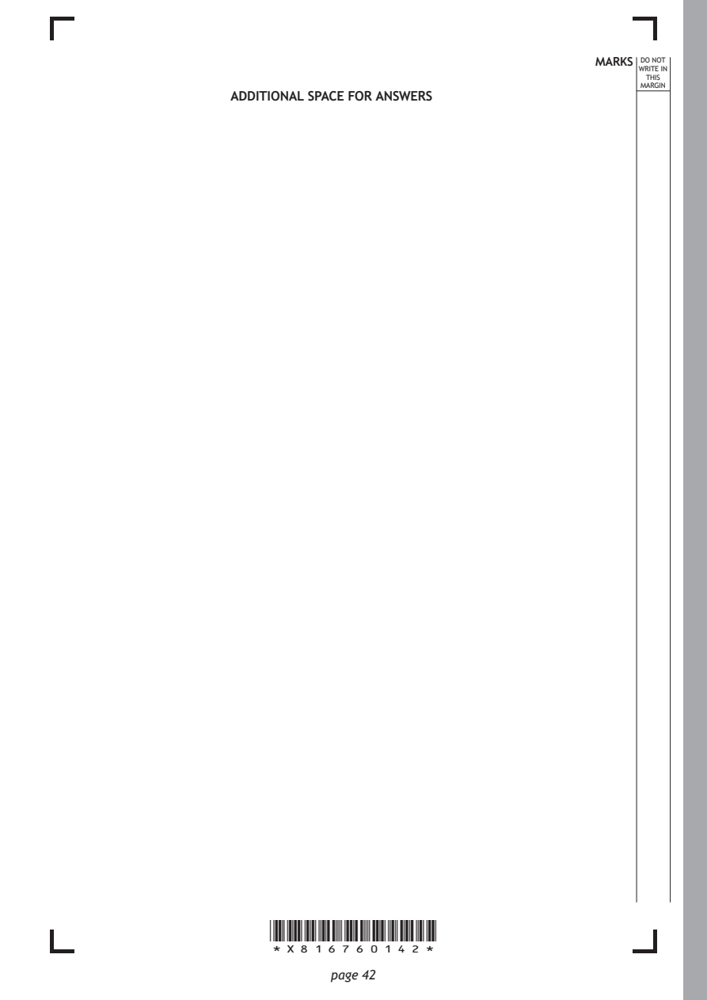
Selectable page text
MARKS DO NOT
WRITE IN
THIS
MARGIN
ADDITIONAL SPACE FOR ANSWERS
*X816760142*
page 42PDF page 43
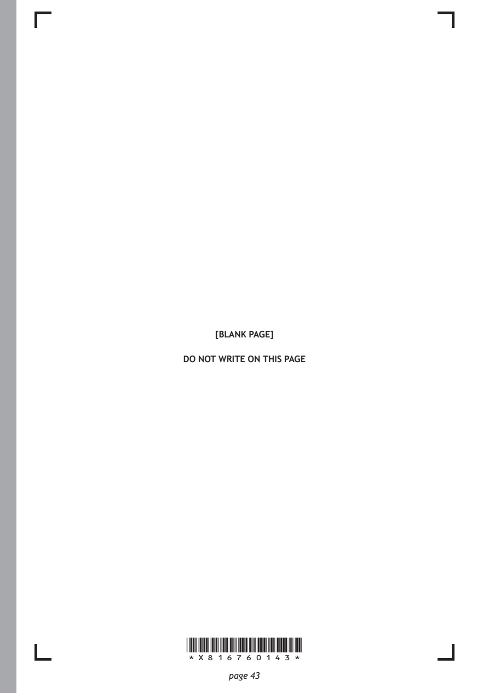
Selectable page text
[BLANK PAGE]
DO NOT WRITE ON THIS PAGE
*X816760143*
page 43PDF page 44
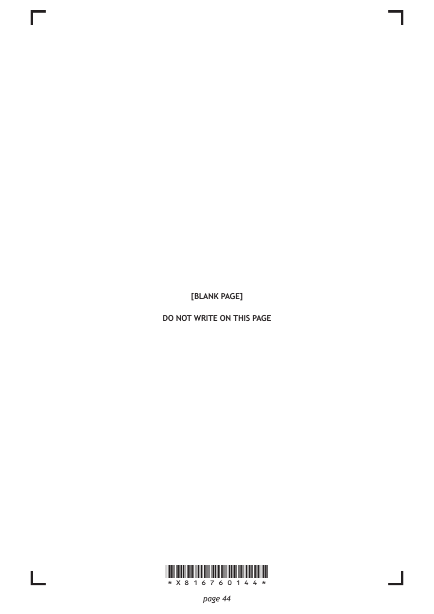
Selectable page text
[BLANK PAGE]
DO NOT WRITE ON THIS PAGE
*X816760144*
page 44